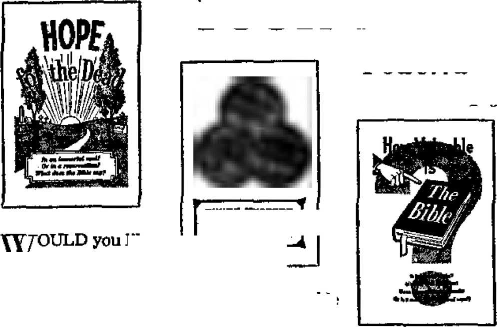

TRUE CONFESSIONS BY EVOLUTIONISTS
An Appalling Masquerade of Forgeries, Counterfeits, and Lies in the Name of "Science”
A Rich Uncle Named Sam
Why doesn’t his money buy more friends?
Egypt’s Plight, Plagues and Proposals
Aims of new government
Any Sense to Dreams?
THE MISSION OF THIS JOURNAL
News sources that are able to keep you awake to the vital issues of our times must be unfettered by censorship and selfish interests, "Awake/" has no fetters. It recodnizes facts, faces facts, la free to publish facta. It is not bound by political ambitions or obligations; It Is unhampered by advertisers whose toes must not be trodden on; it is unprejudiced by traditional creeds. This Journal keeps itself free that it may speak freely to you. But it does not abuse its freedom. It maintains integrity to truth.
"Awake I" uses the regular news channels, but is not dependent on them. Its own correspondents are on all continents, in scores of nations. From the four corners of the earth their uncensored, o n-the * scenes reports come to you through these columns. This journal's viewpoint is not narrow, but is international. It is read in many nations, in many languages, by persons of all ages. Through its pages many fields of knowledge pass in review—government, Commerce, religion, history, geography, science, social conditions, natural wonder's—why, its cover* age is as broad as the earth and as high as the heavens.
"Awake I" pledges itself to righteous principles, to exposing hidden foes and subtle dangers, to championing freedom for all, to comforting mourners and strengthening those disheartened by the failures of a delinquent world, reflecting sure hope for the establishment of a right* €oub New World,
Get acquainted with "Awake!” Keep awake by reading "Awake!”
Published Semimonthly Hi WATCHTOWER BIBLE AND TRACT SOCIETY, INC.
117 Adame Street
N. H. KNoan, President
PrJntfnfl this issue: S79.SOO
UnquaoH En which the ma|azln« h pshlkhed: ttejnlnjiHi-thly—Af.ikiums, Finnish, F.eineb,
German, Hollatnilsh. Norwegian, Spinitb. Swedish. Monthly- -Danish, Greek, Fctrtusuiesc, Ukrainian.
Officei Uearlj nuhscrlption Bate
America, U-S., 117 Adams St, Brooklyn 1. N.I- $1
Australia, Beresford Rd., BtrathfleU, N.S.W. Ss Canada, 40 Irwin Ave, Toronto 5, On Lida
England, 34 Criven Terrace, London, W. 3 7a Snath Africa, Private Bas, P-0. Elandsfontefo.
TrsiisrAul Tc
Brooklyn 1, N. Y„ U. S. A.
Qhant Svites, Secretary
Five cents a copy
Rimlttaaett should Im sent tn office in ycur gauntry in efimpliiince wlLh rejfulatlnun to (Wantee safe deliver? of money. Remittances are accepted at Brooklyn from countries where no office located, bry international money order only. Suhmrfptlnn rates Ln different muntHes Are here stated in local currency. Notice of nplfalleji (with reuewd blank) is sent al least two issue- before subscription pl tea. Change Of addrne when sent to our office may be expected effective within one month. Renri your old as well as new iditnsif.
Znfond as Btennd-tlaRa matter at Brooklyn, N, 7 Act of March 3, 1879. Printed in U. 8. a,
CONTENTS
True Confessions by Evolutionists
Dishes of Today and Their Care
Egypt’s Plight, Plagues and Proposals 17
The Bible and Dreams "Your Word Is Truth”
Acting Consistent with One’s Prayers
Length of Dreams Parsons in Politics Watching the World
co in r- do g>
N el N m M
Ait Appalling Masquerade of Forgeries, Counterfeits and Lies in the Name of “Science”
A MODERN textbook boldly proclaims:
“Organic evolution is today accepted by practically all scientists as a firmly established principle,” Those who yet consider evolution an unproved theory this book calls “otherwise well-informed people who are untrained in abjective scientific thinking or who lack biological background”. (Man and the Biological Worlds p. 291) For the past hundred years organic evolution has marched steadily to the fore ifl the field of biology. Today its impressive and sweeping claims leave the awestruck student convinced that surely a theory able to command such respect must be founded on the most scrupulous evidence and fact. This indeed Is the impression evolutionists have endeavored to create.
However, we are drawn to the words of a member of Britain’s Victoria Institute: "Many of those who boast most loudly that they follow truth wherever it may lead them, only follow truth when it leads in the desired direction. Not all scientists possess a scientific mind or work on scientific principles, and the scientific attitude is not confined to those who have taken a scientific degree.” Of the latter nineteenth century, when the evolutionary flower burst into full hlncm, he remarks'. "Lt was tba fashion at that time for students of the inexact sciences to say that they 'believed in nothing higher than the roof’, and our universities were swarming with young sceptics, agnostics and atheists." Regarding Darwin’s “Natural Selection" the writer points out: “as Huxley said, fit was what all the biological world was waiting fot,’ and «W/t, Vwtfi is, because it was necessarily true, but because it was useful."*
Would men of science compromise integrity to truth and jeopardize their own reputations for the sake of a popular philosophy? No, not all would. But that many did the preceding quotations seem to show and the evidence to follow surely verifies.
Picture Forger Confesses
Ernst Haeckel—mark the name—lived and wrote in the latter nineteenth and early twentieth centuries. He became the great champion of embryology, the avenue of study by which, he contended, evolutionists traced the entire recapitulation of man from fish to reptile to mammal to ape to human Infant. AH these stages, he said, are quickly relived in the fetus during the nine months prior to birth. "The history of the foetus is a recapitulation of the race,” are Haeckel’s exact words. Though most
* "Why I Reject the Doctrine of Evolution," anon. —pajnphlet secured thru Evin. Pro teat Movement, England.
informed evolutionists now discredit both Haeckel and this theory, many of them yet hold to variations or select parts of it To Illustrate supposed likenesses of the human embryo to different animal stages during its various steps, Haeckel made numerous drawings. In 1907 Dr, Arnold Brass, who had worked with him, publicly charged (in Der Menschen Problem) that Haeckel had purposely faked some of his illustrations to make the likeness more apparent. Haeckel’s astonishing reply two years later admitted:
“I begin at once with the contrite confession that a small number of my diagrams are really forgeries in Dr. Brass’ sense. Hundreds of the best zoologists lie under the same charge. The great majority of all the morphological, anatomical, histological and embryological diagrams ... are not true to nature, but more or less doctored, schematized and reconstructed”1
Why such deliberate dishonesty? It was Haeckel who asserted (Weltrat-sel, p. 99): “In the last twenty years a considerable number of well-preserved fossil skeletons of anthropoid and other apes have been discovered, and amongst them are all the important intermediate forms, which constitute a series of ancestors connecting the oldest anthropoid apes with man.” A. W. McCann says of this statement In his book God or
GoriSa1 "When Haeckel wrote that passage he knew that not only was there no such series in existence, but that there was not a single fossil fragment of a series in existence. The falsehood was deliberate.” One lie leads to another.
Submitting to exposure further dishonest argument based on embryology, Douglas Dewar states: “T. H. Huxley gives, in Man's Place in Nature, figures of the embryos of a dog and a human being to show how closely they resemble one another, but he refrains from stating that the latter is an embryo up to this stage, emphasizing the similarity of the process in the two cases. He does not continue his account beyond this stage, alleging that to do so would be tedious and unnecessary for his purpose. He ought to have added that to do so would have destroyed his argument! He is guilty of more than mere omission. He writes: ‘Indeed it is a very long time before the body of a young human being can be readily discriminated from that of a young puppy.’ The truth is that by the time the human embryo is forty days old it is Impossible to mistake it for a dog, and by the forty-fifth day it Is unmistakably that of a human being?’1
Caught in the Act
Evolutionists seem to enjoy admitting their past blunders and present deficiencies. So arrogant are they that they almost de-
• mjlctcjiiee of the Evolution Theory, Dewar, Dp. 37-40.
maud the assumption that there is no alternative to their theory regardless of the holes they themselves have shot in it. But they do not frequently talk of the way their own dishonesty or that of their colleagues forced them from cherished strongholds. Even by the twenties of this century the Lamarckian fable that parents could acquire new characteristics and pass these on to their offspring had been generally abandoned. Yet in those years the work of Vienna’s Dr. Paul Kammerer and talk of deepening the pigment of salamanders, shortening the development period of some amphibians, and canaries able to sing songs their parents had learned created a stir that threatened to,recall the discarded theory. But Professor H. W. Clark tells what happened instead in his book Back to Creationism (1929):
“The climax of Kammerer’s case came recently when a certain American scientist journeyed to Vienna to investigate his claims firsthand. Upon examination of one of the specimens which had, it was claimed, developed new structures, the visitor found that Kammerer had injected India ink under the skin to produce a swelling. Upon being confronted with the fake, Kammerer picked up a revolver and shot himself/*
In the same book dark includes the somewhat amusing anecdote of an apparently fossilized shoe sole discovered a few years before its publication by John T. Reid, mining engineer and practical geologist. The find's amazing feature, though it was attested to by responsible eyewitnesses, lay in the fact that it was found in rock classified as Triassic, approximately 10,000,000 years old! Upon examination, W. D. Matthew, curator, American Museum of Natural History, New York, stated that “the discovery is of course arrant nonsense. The specimen is, in fact, a flat siliceous concretion, of a type not uncommon in limestones, with some accidental resemblance to a part of a shoe-sole, weathered to a rusty brown and with a row of little holes near the margin where a band of small calcite crystals, formed at one stage of the growth of the concretion, has weathered out”.
Clark adds his own observation r “It certainly is remarkable that the ‘flat siliceous concretion’ should resemble a shoesole so closely both in shape, color, and in the possession of a row of little holes just where the sewing should be, and not only that, but show some portions of the thread left so plain that the very twist of the thread can be measured/*
Alone, it is true, the last-cited example could not be turned dogmatically into a condemnation of evolution. But look elsewhere in evolutionary geology and see how repeatedly guesswork and juggling of facts and time periods are common practice. Dr. H. C. Morton tells how "American scientists found a skeletop in the Mississippi valley, and said it was 50,000 years old. On digging a bit deeper they came across a flatboat and someone remembered that a flatboat had been wrecked and a man lost during great floods. So they corrected the 50,000 years to 50”. Similarly, writing relative to life periods and fossil finds, Heilprin said (The Distribution of Animals)'. “It is practically certain that numerous forms of life, exhibiting no distinctive characters of their own, are constituted into distinct species for no other reason than that they occur in formations widely separated from those holding their nearest of kin.”
Fraud of the Phantom Fossils
A word now regarding fossils. The term “fossil men” leads many laymen to believe that whole skeletons are found of hybrids halfway between man and ape, when in reality mere “Humpty Dumpty** fragments
are possessed of what are claimed as such links. Such erroneous impressions are caused by statements like the following appearing in the New York Sunday American of August 7, 1921, by W. H. Ballou. Regarding the “Trinil Ape-Man”, he said: “It stood erect, had a well-shaped human head and was tailed. Science deduced from the skeleton our evolution into the smoothskinned, tailless creatures that we are today. . . . From the most ancient legends it would seem that the tailed people are true descendants of the Trinil Ape-Man who was not confined to Java, Borneo and New Guinea.”
One Professor J. H. McGregor reconstructed the “Trinil Ape-Man” for the Hall of the Age of Man in New York’s American Museum of Natural History many years ago. There its bust was placed directly between the skulls of various types of apes on the one side and the remains of some alleged primitive men and a recent human skull on the other. One of this century's leading evolutionists, Professor H. F. Osborn, edited a guide-leaflet series explaining this exhibit in which he alluded to the supposedly accurate restoration of the “Trinil" specimen. Professor Osborn was later criticized for not mentioning the fact that he had never viewed the “Trinil Ape-Man’s" remains. In this regard the authoritative Dr. A. Hrdlicka states, Smithsonian Publication 2300, page 10:
“All that has thus far been furnished to the scientific world [This was twenty years after discovery of the original.] is a cast of the skull-cap, the commercial replicas of which yield measurements different from those reported taken of the original, and several not thoroughly satisfactory illustrations; no reproductions can be had of the femur and the teeth and not only the study but even a view of the originals are denied to scientific men”
Read what Professor Osborn flatly admits concerning this “Trinil Ape” customer: “We may form our own opinion, however, from a fuller understanding of the specimens themselves, always keeping in mind that it is a question whether the femur and the skull belong to the same individual or even to the same race."2 And finally, note the superb way in which Harvard’s renowned anthropologist, E, A. Hooton, lays utter waste to the whole theory of reconstruction and classification on which evolution leans so heavily:
“No anthropologist is justified in reconstructing the entire skeleton of an unfamiliar type of fossil man from parts of the skull cap, one or two teeth, and perhaps a few oddments or mandible and .long bones. The conditions of the preservation of geologically ancient human remains usually preclude the recovery of more than a few scattered fragments of one individual. Inferences concerning the missing parts are very precarious, unless more complete skeletons of other individuals of the same type are available to support the reconstruction. . . . Even in the case of Neanderthal man, long represented by a goodly array of incomplete skeletons, it is now evident that conceptions of the rigidity of this type, based upon Western European finds, are completely erroneous. The ever-growing collection of Sinanthropus specimens teaches the same lesson. If these specimens had been recovered in half a dozen widely separated parts of the earth and had been described by as many anatomists, the latter would possibly have created as many new species or even genera of man. The business of taxonomy, or zoological classification (pigeon-holing) works well enough for coarse categories, such as classes, subclasses, orders, suborders, and families. Like big business in the commercial world, it masquerades under a guise
of efficiency and accuracy which proves to be illusive under close examination. Formerly I was under the impression that taxonomic indiscretions were peculiar to anthropologists, but now I am convinced that a zoological classificationist may be as dissolute and irresponsible as a lightningrod salesman. Further, the more I inspect the family trees of man, so facilely constructed by students of human palaeontology, Including myself, the more I am inclined to agree with the poet that 'only God can make a tree3. ... If, on the Day of Judgment, the assembling of bones incidental to a carnal resurrection should be entrusted to anatomists, I have no doubt that many of us would find oprselves skeletally defective, a goodly share of our osseous parts having been assigned to hypothetical giant gibbons or to fictitious chimpanzees.”3
Evolution3a False Front
Have you perhaps been awed by the confidence and apparent scientific authority with which evolutionists like to speak? Th evolutionistic texts Darwin has ever been painted as a meticulous scientist who spent many years in close research before reaching his conclusions. However, it is known that he had heard the evolution idea from his grandfather and that he pondered the matter while on a voyage as naturalist aboard the British ship 1‘Beagle”. Robert E. D. Clark, M.A., Ph.D., tells us: “It was during the voyage that Darwin resolved to collect evidence which might bear upon the point It was not long before he was entirely convinced as to the truth of evolution, and the problem that lay before him now was how best to present the evidence to the scientific world. The myth that Darwin took twenty years to make up
* Apesj Mm and Moron3 t pp. 115, 118.
his mind on the subject has long since been exploded.”3
Was Darwin so sold on the scientific merit of his theory founded on “natural selection”, the survival of the fittest? Mark his own words: “If I have erred in giving to natural selection great power, which I am very far from admitting, or in having exaggerated its power, which is In itself probable, I have cci least, as I hope, done good service in aiding to overthrow the dogma of separate creations"] [Italics added] Not love of truth or regard for science but hate for God and spite for creation are thus betrayed as Darwin’s true motives.
Nor need we tremble before long and imposing names given their specimens by evolutionists. Hesperopithecus harold-cookii was once hailed by Henry Fairfield Osborn with all the authority in the world as follows: “On the basis of these very careful studies, the author decided to make this tooth the type of the following new genus and species.” It was a tooth only 10.5 mm, by 11 mm. discovered in Agate, Nebraska, in the early twenties. The “careful studies” were made by the American Museum of Natural History. The tooth was exalted as a link between the higher apes and lowest American Indians. But, woe, further study eventually lowered it to the pig-family level and out went all the superlatives and evolutionary confidence.! Worse still, Douglas Dewar reports a book written in 1943 which still appealed to Hesperopithe-cus as a “missing link”.®
Not even when prominent evolutionists line up animal families in the way they like best so as to show an apparent progress from animal to man is there cause for concern. E. A. Hooten explains that this is done by means of two laws, that of '‘Irreversibility'’, which states that no form of higher evolution can revert back to features of a lower form; and that of “convergent or parallel evolution”, which “affirms that similar or identical variations may be developed independently in unrelated forms ‘which happen to be subjected to similar environmental forces’.” Then he says: “Citation of this law enables the fabricator of family trees to dismiss as irrelevant and illusory all morphological similarities in those animals which he wishes to exclude from close relationship to man. Wielding the law of irreversibility of evolution in one hand, and that of convergent evolution in the other, the brain trusters of the zoological New Deal can excommunicate from the assemblage of man’s ancestors any unfortunate stock of i-hich the contemporary representatives seem undesirable poor relations.”4
Science or Deceit?
Remembering the position of modem evolutionists, that their theory is “today accepted by practically all scientists as a firmly established principle”, what can we think of such confessions? What of deliberately inserting an embryonic human head on the drawing of an ape embryo or removing the tail from the illustration of a macacus (tailed monkey), converting it into a tailless ape (gibbon)? Of such was Haeckel accused by men who forced his confession of guilt t
Not science. This is rank dishonesty.
What of inducing artificial formations on experimental animals to give the appearance of newly acquired characteristics?
This too is dishonest.
What do you think of men who can reconstruct entire skeletons and even hypothetical flesh-covered bodies from one or two fragmentary bone structures which they admit they are not even certain came from the same creature, and the oriffinals of which they have not even seen!
Exact scientists? No, master magicians!
And what of atheistic prejudice that passes for scientific method, tooth fragments that pretend to disclose intimate details of past life eras and specially coined zoological “laws” that permit juggling into man’s ancestry the nonexistent stages needed to prove evolution and silencing those parts that do exist which disprove it?
So fantastic and dishonest is all this that even evolutionary scientists who have an ounce more respect for their profession than for their ability to entertain have repudiated it. How, then, is evolution “firmly established” and “accepted by practically all scientists”? How but by the long years of teaching arguments based on dishonest research and examples, many of which, when pressed, they now deny!
Knowledge gained by modem anatomical research has, admits Dr. H. F. Osborn, “entirely set aside the entire monkey-ape theory of human descent” Evolutionist H. H. NeWman in his “Readings in Evolution, Genetics and Eugenics” declared: “Reluctant as he may be to admit it, honesty compels the evolutionist to admit that there is no absolute proof of organic evolution.” [Italics added] Does this sound like scientific confidence in a “firmly established” principle? And what does it matter who accepts the theory? Many disciples can be misled. Mounting proof, not numbers of believers, brings a theory closer to truth. Absence of proof, in spite of a large following, spells only mass deception.
Evolution has both these distinguishing features: many believers, little evidence.
Why doesn't his money buy more friends T *
DID you know that Iranian '
newspapers use a flop-eared, bug-eyed jackass as the cartoon symbol for the United States? Did you know a leading Protestant magazine recently said, *‘Europe is as afraid of the U.S. as of the U.S.S.R.”; that a major U.S. maga-
zine spent six pages on "Why Asia
Hates Us”; and that when ordered <o obliterate Communist insults to General Ridgway, French police often eliminated merely the word "Ridgway”, leaving the words "assassin”, "murderer” or "microbist” prominently displayed on American cars? Popular resistance to the U.S. has been reported so meagerly in the American press that there is little appreciation of its extent. American taxpayers are frequently unaware that Uncle Sam is often viewed as the type of rich and stubborn uncle who is pampered for his money—and sometimes hated because of it.
Last January the late Senator McMahon warned against the idea that because of Uncle Sam's wealth everyone should line up and march behind him. He cautioned that the U.S. could not "win converts to our cause simply by expecting five fewer Communists for every $50 we invest abroad”. In fact, Americans in Europe find that the dollar buys few friends, and that Europeans are inclined to blame the U.S, for their troubles. It is as Justice Douglas recently reminded: "You can win Asia with affection, but you can’t buy Asia with dollars.”
What brands the U.S. a "rich uncle” type in the minds of much of the world? For one major cause the Philadelphia Inquirer said: “An arrogant U.S. military clique reminiscent of the Wehrmacht itself is undermining democracy in those foreign lands, losing us good will faster than the Voice of America and other agencies can build it... Peoples abroad will believe what they see of Americans rather than what they hear. And what they see in the fast living of U.S. Army brass must infuriate them—because it certainly infuriates American citizens who have learned for themselves what goes on.” It added: "Big brass in big cars race over the countryside at high speed, flouting traffic rules, putting up a vulgar show of wealth and power, treating natives like conquered people.... Some of the conduct over there does more to fan Communist propaganda than anything the Reds could think of.... Let brass hats—and their wives, too— never forget that they are Americans, not Prussians.”
It may be that the practice of luxuryliving in conquered lands has been the unbroken rule throughout history, but many rules are being broken now that the U.S. believes it a military necessity to make friends with all noncommunist nations, including former enemies. American officers living in luxury hotels, having big town houses, suburban estates, choice hunting grounds, private trains, the finest food and accommodations—wealth the conquered people never had—only add to the resent-
went that goes with any military occupation
Europe Fears Another War
Europe’s greatest worry about the U.S. concerns the policies the U.S. believes may prevent another war. They object to what they feel is the rich unde’s sudden attempt to run the whole show. Warned The Christian Century, February 6: “The very attempt to deal with the states of western Europe as though they were recruits under the drillmaster's eye would be likely to increase popular resistance within those countries to American leadership and policy/' Note: increase the resistance, because most of the common people in Europe believe, it said, “that Hussion occupation, fearful as it would be, would nevertheless be preferable to death and the devastation of another world war/’ and that “the common people in the ‘nations close by' are as much afraid of what th. working out of the policies of U.S, power will do to them as of Russia’s power. Perhaps more afraid”.
If this seems strange to American ears, then just note this comment made from Paris by Eleanor Roosevelt in her “My Day” column: “One thing that always astonishes me in my contacts with representatives of other nations and the people I meet over here” is that “after you get over the formalities^ they arg sure to ask in a confidential way: 'Now tell me, does the United States really want peace with Soviet Russia?’ At first I thought it was a funny question and made fun of it. Now I have decided people are serious”. What makes them so distrustful? Europe is rearming, but no state has yet declared an emergency. No public alarm has been fanned up. War fears are not propagandized, and none have conducted air-raid drills as U.S. cities have. In view of their lack of what Herbert Hoover recently called “hysterics”, the attitude Of a distant and powerful nation that seemingly considers a war on their land as inevitable is frightening.
Asia Hates Colonialism
Asia has different, though equally important, reasons for turning from the U.S. Pearl S. Buck, Nobel Prize-winning author of books on China, wrote in Look, August 28, 1951: “Once the peoples of Asia were our friends. Now they are bewildered by us and wounded. They hate us..,. Therefore, let us, in common sense and prudence, ask ourselves why we are hated.... I would say it is because the Asians feel that we have deceived them. They feel we have taken sides against them.,.. Americans had once been colonials, too, subjects of the English, who not only held India and Malaya and Burma but also held great pieces of Chinese soil; whose ships sailed into their inland waters; whose hold was unshakable upon the customs receipts and upon the Chinese ports; who had fought wars to force the sale of opium upon China. Americans had never done any of these things.... It is true ... that the conduct of Americans in the armed forces did deeply shock the peoples of Asia. The drunkenness a/one was repu/sive,,.. But it is not over these things that the people of Asia have turned against us.... Imagine, if you can, the surge of bewilderment and despair that flooded into Asian hearts when they heard that we were on the side of old empire and therefore against them.... We have proceeded in the most provincial and local-minded fashion to act everywhere in the world without reference to other peoples. We have upheld only those persons who were willing to take direction from us; usually persons rejected by their own people and who followed us for the most corrupt reasons of personal power and gain,”
The Far Eastern editor of U.S. News World Report said in the March 25, 1949, issue of that magazine: “At the end of the war, I was flabbergasted at the amount of American prestige..,, You can imagine the terrific letdown of these people when they decided America was on the side of the colonial powers.’* In Saigon he asked a young man fighting the French: “Why do you follow Ho Chi Minh? He’s a Communist. Don’t you realize what might happen to your country?” The soldier laughed and replied: “The French have destroyed every other nationalist organization here. We would rather have Indo-China ruled by a native Communist than an Indo-China ruled by the French.” A prime minister of Indonesia told him: “America has betrayed us. America is supporting the Dutch.” In Indo-China the Communist line was: “The Americans have betrayed us. The Russians have agreed to trade with us. So you see who our friends are.” Throughout Asia millions are awakening to the opportunities of independence, equality, freedom, complete rejection of the centuries of colonial exploitation and domestic oppression. In the people’s mind, at least, the U.S. is now aligned with the exploiters.
Conditions Uncle Sam Supports
Through American eyes, U.S. aid to Asia includes guns for defense, supplies, food, clothing, medicine, fertilizer, technicians, meh to help in road-building, agriculture and engineering. But turn and view it through Asian eyes. They saw the guns in the hands of lawless soldiery and oppressive police. They saw corrupt bureaucracy suppressing free speech, enforcing unjust laws, enriching itself at the people’s expense. They saw US. goods at sky-high prices on the black market; American fertilizer taxed so highly by their own governments that they could not buy it. They saw greedy landlords benefiting from crops they produced. Supreme Court Justice Douglas, who toured Asia extensively, warned that Asia's system “is not going to survive”. He said: “We have been supporting corrupt reactionary regimes, putting money behind governments that are vicious governments, reactionary governments, wasting the wealth of America, trying to underwrite the status quo, trying to stabilize the situation.... I met men out there who own farming land greater in area than the entire state of Switzerland. One man owned 1,600 villages lock, stock and barrel. Go into those villages with your Point Four program and increase the production of the land and if the owner takes 95 per cent, what have you gained in the struggle against communism?”
America told these illiterate people who live in one-room dirt-floor shacks about wealth and skyscrapers; reminded them how rich the foreign white men are, how poor they. Communism talked on their own level, and told them it would overthrow unjust landlords. Communism did not offer much, and has certainly not lived up to its promises; but it did talk in language the people could understand.
Viewing the U.S. from the Outside
Many Americans fail to realize that only one-third of the world’s population is white. America promises democracy, talks of freedom and equality, but natives get the idea that the soldiers’ term for them, “Gooks,” is not a complimentary one. Then the very people to whom the U.S. is appealing read anti-American propaganda that tells them their skin color would deny them the freedom America promises. The executive secretary of the National Association for the Advancement of Colored People declared on April 24: “There is a social revolution sweeping the world and if white America doesn’t wake up soon it will be too late.”
All too often even the praise for America does not concern the liberties available or the advancements in living conditions, but concerns “gum, jive, jazz, tight sweaters, padded bras, yo-ypes, comic books, neon-lights, dance halls, and chromium trim”. The January 19 Saturday Review of Lit-erasure described motion picture advertisements in Japan with “a golden-haired American beauty struggling to keep a clawing maniac from divesting her of the few remaining square inches of cloth which dung insecurely to her body”, and said, “The older folks, I was told, keep their heads down when they pass these movie placards."
The report that U,S. soldiers fathered 200,000 illegitimate children in Japan has not added greatly to the honor of democracy, nor should the addition of the term “shacking up” (living with a woman) to at least one local dialect in Germany raise the general respect for the conquerors.
Criticism includes not only the racial issue and morals, but the inherent pride and self-respect of many people. John Foster Dulles chained that “when the secretary of state of the U.S. goes on nineteen trips to Europe and never sets foot once in the postwar period in any Asiatic country, that is the kind of thing that cuts them to the quick. They think that we look upon them as second-rate, expendable peoples”.
Reasons for Resentment
Many persons in all these lands have a high respect for much the United States has done, and a warm liking for many individual Americans, but conditions have reached the point where John Foster Dulles could ask in the above-mentioned debate, “Can anybody claim [American foreign policy has been successful] in the Middle East? In Africa where unrest is seething against us, [and] South America where communism is building up and where we have the worst relations we’ve had in many, many years?" The resentment in these lands is far greater than many Americans have imagined. Why? Because U.S. representatives and tourists have flaunted their abundance before many who have much less; because they fear “trigger-happy” policies may set off a third world war; because America is blamed for current rearmament and high prices in Europe; and because some older powers resent U.S. rise in world leadership, Because in Asia the U.S. has not always recognized just claims of the people, but has supported corrupt governments that the people later risked communism to overthrow. Because of American haughtiness; because Asia hears that racial discrimination within America would prevent two-thirds of the world's population from receiving the benefits of the democracy America holds up as the alternative to communism.
Such objections are overemphasized by anti-American propagandists, but there is enough fact behind the charges to make them difficult to refute. Surely the government is aware of these problems and all their complications, What might on the surface seem an obvious solution could easily bring on further complications. Without unity another world war is feared. Yet unity is possible only through fear, because each nation is looking out for its own best interest. Appeasing one government angers another. A satisfactory solution remains so complicated that only God’s kingdom rule over earth can remedy the difficulty, as was well illustrated by an interview with the Far Eastern editor of V.S. News & World Report, published March 25, 1949:
Question; “One thing is clear, anyway. The world really seems to be in a mess, doesn’t it?"
Answer; “That’s right—quite a mess."
naments made from glass, marble, metal, and alabaster.
Alabaster is a very beautiful, smooth, marblelike stone. Lovely little jars were made out of alabaster for the ladies. These jars held many different oils and cosmetics. There were larger jars, too. These were used as burial vessels. The heart and other organs of the body were kept in these larger jars when the mummy was being prepared for burial, and were placed in the tomb with the mummy. Usually the covers of the burial jars were specially carved to represent the portrait of the deceased. Often the lid was shaped into a head of a dog or a jackal, which animals
A STACK of dirty dishes heaped up in the kitchen sink usually makes one want to forget their usefulness. They, perhaps, cause more fuss about the house than any other one chore. However, their contribution to man and to science cannot
be overlooked. They, better than many other archaeological discoveries, relate the habits and traditions, the likes and dislikes of the peoples of the past.
Probably we will never know who made the first dish, or the inventor of the ingenius potter’s wheel. Dr. Berthold Lau-fer’s studies show that the potter’s wheel evolved in Egypt and from there it was transported north, west and eastward. However, the ancient people of China, India, Mesopotamia, and other countries all believed that it was invented by their own ancestors. Extensive archaeological studies of the Nile valley have credited the Egyptians with being the first to make use “of the mold, the development of the potter’s wheel, encaustic inlay, glazes and frets, and even the muffle kiln”. Among the pieces found along the Nile were articles made of red earthenware that were marked with hieroglyphics, and are said to date back to 3000 B.C. Also uncovered were a great variety of vases, painted dishes, or-
NOVEMBER 22, 195S were considered to be sacred. These animals, the Egyptians believed, guarded the mummy while in the tomb or grave.
Not many pieces of the early Egyptian’s pottery were created for decorative value.
They believed in putting their clay pots and pans to daily use. Their fruit and wine they kept in bottles and bowls. Jars and jugs were made to store the grains and oils. Smaller vessels were designed to hold drugs and spices. Water-carriers had a specially shaped jar. Dishes and cups received the same rough treatment that they do
CHINESE
13
ancient Greek
today. Cooks and butchers, shepherds and weavers, all found good use for pottery ware and vessels.
Greece and Potter's Clay
The secrets of a materia] so kind and gentle, one so sensitive and yet so good-natured, could not be held by the Egyptians. The potter's skill found its way to Cyprus and Crete; from there to Greece. The paintings on pottery tell many things about the lives of the people of Greece. The finer paintings represent men, women and children in daily life, In some pictures they are seen fighting, and in others, working and playing. Other paintings represented “the gods and their relations to men.... They believed that in the early days gods and men married each other, and so all their old heroes were sons of gods or goddesses'*. They also believed that these heroes lived on earth and were the leaders of the early Greeks.
Some real happenings have been recorded, but these have been so confused with the myths that it is difficult to determine what really did take place. A good many of these mythological stories have been represented on plates, cups and vases by painted pictures. As a rule, the poor people could not afford painted vases or table ware. They used simple earthen* ware in much the same way as people do today. According to R. L. Hobson, “Pottery was never a free art in Greece. The wares were inspired, controlled, and finally destroyed by progress in the arts of metallurgy and painting.”
Chinese Master Art
Unlike the Greek, the Chinese combined a thorough and appreciative understanding of the nature of his clay with a wise restraint of decoration, and in this way developed the finest pottery ever made. We acknowledge the supremacy of their work when we use the word “china”. The Egyptians, Persians, and Greeks thought of pottery as just useful articles of everyday life. The Chinese, on the other hand, combined the two, usefulness and beauty, and won fame. However, many of their loveliest pieces were used for ornament only. Almost every Chinese of any importance or of wealth had a fine collection of dinnerware and vases that he displayed, but only on special occasions and to the best and closest of friends. These pieces were usually richly decorated with figures and symbols of his religion.
The dragon is probably the most important of all animal symbols. During the Ming and Manchu dynasties the five-claw dragon was the symbol of the emperor. It was believed by the Chinese that when the emperor died he was carried to heaven on the back of the dragon. This imaginary animal was supposed to have the power of making itself as “tiny as a silk worm, or of swelling till its body filled the sky”. Paintings often picture the dragon flying through the sky among the clouds, or rising from the waters of a lake or river.
An emperor during the Ming dynasty ordered a large dragonfish bowl to be made by the imperial factory. Year after year they failed, and the ones in charge of the factory wete punished for not having been able to perfect the bowl. One day when a number of bowls were being made, T'ung leaped into the flames and gave his life as a sacrifice. The burning of Tung’s body brought about a chemical change in the fire, and the bowls came out perfect. Tung was hailed as a god. Often sacrifices of live animals were thrown into the kiln, and similar results were obtained.
The figures on Chinese pottery are not all gods and goddesses. Many figures are of animals. Ranking high among the sacred animals with supposed spiritual powers are
the unicorn, the phoenix, and the tortoise.
The unicorn is an imaginary creation with a head of a dragon, a tail of a lion, and a body of a deer. It is supposed to step so lightly that it leaves no tracks when it walks. It is a bringer of good news to man. On other pottery might be seen the bird that lives in heaven and makes trips to earth only to bring good news to man. This imaginary bird is the phoenix, a special emblem of the empress. Its feathers have brilliant colors and its tail is long and flowing. -
The Chinese desires long life more than anything else. He has wished for it, prayed for it, and painted it on his pottery. He believed that the tortoise lived 5,000 years, so he made that his symbol of longevity. The stork and the tortoise, the pine and the bamboo tree were all symbols to him of a long life on earth and sometimes of a never-ending life in heaven.
The bat and the deer to him represented happiness, the fox was a symbol of mischief, and the iris represented swords. Iris leaves were often placed near the doors and windows, so that when the evil spirits would come near they would think the leaves to be swords and would be frightened away. Fish, fowls, insects, clouds and rain and almost everything that one can imagine were used as symbols of one thing or another. The artist had all of these things in mind when he painted his wares. Many of these symbols were used hundreds of years ago, and are used today only because of custom. Others have a very real meaning for the people of China even to this day. Many paintings represented the simple daily life of the people.
Dishes of Today and Their Care
Like the Chinese, Greeks and Egyptians of old, many housewives segregate their dishes according to a caste system for special occasions. The better dishes are revered, pampered, and often never allowed to associate with anything beneath their station. And never are these dishes to be found at the dinner table, unless special company is present. Good dishes if properly cared for will last almost indefinitely even though used daily.
Food should never be allowed to stand in the dishes after meals. Dishes should 15e immediately cleaned of all alkaline- or acid-containing foods and washed. K it is inconvenient to wash the dishes soon after each meal, then they should be rinsed or wiped off with paper towels to remove as much food as possible. Tea or coffee cups should be rinsed. Washing soda and heavy-duty laundry soap are "taboo”. Dishes should be kept separate from the silver. Mixing dishes and silver in the dishpan will increase breakage and scratching. The same is true with drying dishes. Slipping one dish under the other as you dry is likely to scratch the finish, since the foot of most plates is not glazed. Play safe; dry one dish at a time.
One should not subject them to sudden heat. Quick temperature change increases the danger of cracking and crazing. Teapots should be warmed before boiling water is poured in. Not under any circumstance should steel wool or scouring powder be used on dishes. They are sure to scratch your dinnerware. It is not necessary to give dishes a scalding rinse. It is known to craze most earthenware and dulls the glaze of china. Washing, and not scalding, cleans dishes. The rinse water should be about the same temperature as that in the dishpan. It is not wise to stack dishes. After they are washed individually, they should be placed in a rack for drying. A soft towel should be used to wipe away the remaining moisture and restore luster.
Observing these and other points will preserve the life and beauty of your dishes.
TODAY*/ WODtD
A Trme of Horror
Under that title the May 14 Chr1 Cen* tury cited this report written by the president of the United Press: "Atom bombing as a mercy stroke,,. will kill troops quickly and in large numbers and enable the capture of positions with a minimum of loss and at a maximum speed, and thus shorten wars.... Thus a battle which might have lasted for weeks is compressed into a few hours. The necessity of air raids and bombardment is eliminated. One bomb does it all.”
This commonly expressed opinion and the use of napalm fire-bombs in Korea caused The Christian Century to comment that ours is -/‘a time of horror", and "The depth of the horror is revealed by the fact that we are not horrified by what we are doing. We say we are horrified. When we read such an editorial as this we reassure ourselves that of course we are. But we aren't—not really. If we were, we could never accept so casually what is going on in Korea and Nevada and along the Savannah river?' Justifying as a military necessity the reducing of Malayan areas to starvation because Communist terrorists have operated in that region is, it said, "the same plea which theologians have said would justify atomic or hydrogen bombing. But the fact that we so easily accept such a justification shows how deeply we are sunk In the horror of these times."
Mcthoduts View the world
The "State of the Church*' address Is written by a Methodist bishop, revised by the Council of Bishops, and finally presented over the signatures of all seventy bishops at the opening of the denomination's general conference once every four years. On April 23, 1952, it declared, "It is not Russia that is our real enemy, but the evils in modern society which Russia falsely offers to eradicate." The message, representing the unanimous opinion of the Methodist bishops, pointed to humanity's revolt against poverty, famine and exploitation, and said, "Our real problem turns out to be not communism, but revolution, and communism is a perverted and godless way of directing revolution to its own ends?’
They also sharply criticized the "concerted and often vicious efforts to regiment thought and curb freedom of speech”, saying: “This whole question of freedom Is assuming alarming proportions in American life. In many instances we are redefining freedom and debasing the coinage of the word until it means •freedom to be like everybody else, to think as the majority tn the town, or state or country thinks, to teach what the legislature or the dominant political or religious opinion wants taught*?’
Mental Health
7? At a luncheon attended by Wall Street leaders and businessmen during mental health week (May 5) Walter Maynard, president of the Association of Stock Exchange Firms, said: "Even a casual reading of the newspapers showed that, by far, the largest proportion of all the private disasters in the news, of which murders and suicides are only the most conspicuous, result from mental illness?’ And further: "A brief reflection upon the history of our own time, without reaching any further back, shows that the extension to whole peoples of the symptoms of fear, hate, guilt and aggressiveness, which tend to characterize the mentally sick individual's personality, forms the basis for virtually all the world's major social disasters, including wars, riots and revolutions?'
A Christian Nation?
H America calls itself a Christian ,nation. Is it? Dr. Kenneth D. Miller, president of the New York City Mission Society, does not think so. He said, on April 20, that New York 1$ a "city of wistful pagans", that the great mass of people that are not reached by any religious organization far outnumbers the total claimed by the Roman Catholics, Protestants and Jews within the dty. Stressing the laxity of missionary efforts he said some Protestant churches have become "social clubs", "We are really cohfronting here the greatest missionary field in the world," said clergyman Miller, "I suggest that the solution is that each local church should regard Itself as a missionary agency and as existing not only for those presently Inside it but for those outside of it."

Planes zoomed low overhead In patrol formations. Something very Important in the history of Egypt was taking place, but nobody seemed to know what.
The drama was taking place at the Bulkeley, Alexandria, government palace where the government body was in motion. At that time the palace was well encircled by a strong military force of cold steel ready to go into action. The atmosphere was electrified and nobody speculated audibly on what was taking place. The tension became greater by the hour. A 6 p.m. the mystery was revealed. Radio stations carried the news that King Farouk abdicated, and his son Ahmed Fouad was declared king of Egypt and the Sudan. A committee of regency was constituted to take charge of the affairs of the nation till King Ahmed Fouad II reaches the age of majority. Instead of tears there were cheers and scenes of rejoicing, men happily greeting each other, women singing and dancing in the streets.
New Government Moves into Action
The new premier stated that all political parties had to proceed immediately to a purge within themselves and to make known their programs, because the people should be informed of their destiny. The process of purifying the government and aiding the people began in every respect. The titles of Pasha and Bey were abolished. The special bureau of the Ministry of Interior, as well as the civilian police, was demolished. Restrictions for exit visa were put in force. The matter of regency was settled and three regents were appointed. Committees were formed to purge the government machine. New assurances were given to foreigners as to their security and protection, of both their persons and their property. In addition, a decree was issued allowing them a residence in Egypt of ten and five years. Also, foreigners were encouraged to Invest their capital in the country.
After the arrival of Mr. Stevenson, ambassador of Great Britain in Egypt, who was not in the country at the days of the movement, discussions were held between him and Aly Maher, the then prime minister, concerning more friendly relations. The government exposed her program that promises an economic uplift, but one of the most important things done by the government was that the censorship that had been in operation since 1948 was lifted and abolished and everyone now can express himself with freedom. The matter of freedom was something that was missing and something fbr which the people asked. A local English paper, The Egyptian Gazette} for July 23,1952, said: “Lift martial law and let people enjoy the breeze of freedom in all its aspects, freedom of speech, of writing, of assembly and above all individual freedom which is the most precious in life.”
The new government proposes many reformations. Land properties will not exceed 200 feddana (207.6 acres); the rest will be taken by the government to be distributed among the farmers. Also all the land the king once owned will be distributed. Many other proposals were made.
Problems Not Altogether Solved
But proposals do not always solve problems. They are merely the recipe in the “cookbook”, but the cake of economic and social reform is yet to be made. It is not going to be a simple mathematical problem of distributing the nation's riches nor will it be solved through the common slogan of "industrialization”. Egypt's problems are great and monumental. Under the subheading “Egypt's New Cabinet Faces an Old Dilemma” Michael Clark wrote: “In economic circles here, the measures of social, economic and fiscal reform adopted or contemplated by the new regime in Egypt since the July 23 coup d^tat are generally conceded to leave untouched the country’s fundamental problem: that of economic sclerosis and constant decline in the standard of living/’ Clark points out that while there is "no inclination among neutral observers to sneer at the government’s motives and objectives”, yet competent economists are agreed that for the people to "assume that the desperate poverty of the great majority of Egypt's people comes from an unjust division of wealth and that, consequently, the surest remedy lies in a more equitable distribution of the nation’s riches” is a "misconception of economic facts”.
The writer points out that "a correlation between the inequalities of fortune and the causes of poverty cannot In this case be made, for the simple reason that Egypt’s population is increasing at a rate of about 400,000 annually, while the total available wealth remains virtually stationary". He goes on to show that "if Egypt’s total national income for 1950 were divided equally among the 21,000,000 inhabitants of the country, every Egyptian would receive the equivalent of $102.86; and the poverty would still be there”.
The newest proposal is "industrialization”. The former government of Premier Aly Maher and his associates had ambitious plans for the industrialization of Egypt. The former premier is quoted as saying that he had "reached agreement with Point Four to help the government industrialize the country”. But Clark declared that "the notion that industrialization will solve Egypt’s difficulties is, however, considered hardly less naive than the notion that redistribution of wealth will do the trick, first because in a predominantly agricultural country such as Egypt, national income is largely determined by agricultural earnings”. He further points out that "in 1949 some 2,574,035 landowners held less than five acres each, the average for these owners being just over .8 acre per owner. The remaining 157,085 landowners held the rest of the 6,000,000 acres.
"It is greatly to be feared that the land reform program, while commendable from a social point of view, may accelerate the downward swing of the agricultural productivity curve by still further increasing the number of small holdings.... The only conclusion that can be drawn from this is that any substantial improvement in the Egyptian standard of living is at best a long way off.”—New York Times, September 14, 1952.
As The Egyptian Gazette for July 22, 1952, stated: "Stability in government in Egypt has become a forlorn hope.” But Egyptians as well as all nations need not lose hope, because perfect government has been provided for mankind. That government has the power and authority to overcome all barriers, racial, social and economic. It is now being proclaimed to the ends of the earth as a witness to all nations before the final end of this system of things. Soon, now, all oppressive rule will cease and a new day will begin, to give rest and happiness to all those whose privilege it will be to live under that government—the kingdom of God.
By **Awak»I” correspondent in tndoneita
MINAHASA Ifl a small part of Indonesia found in the northernmost part of the island of Sulawesi (Celebes). Few of the Western world are acquainted with the customs of the little people of the East living on Sulawesi, and yet the influence of the West on the lives of these people is seen and ?£lt almost everywhere.
< Despite Western influence and the claim that more than ninety per cent of the population confess Christianity, there are many customs and superstitions, some of which are totally unchristian, still taught and practiced in Mln ah asa land. For example:
<£ After the death of a person food offerings are made, and there are gatherings on the third and fortieth days after a person's death. A certain way in which the owl calls at night is said to bespeak either a good or an evil omen. A black snake crossing one’s path is considered a danger warning and many will travel no farther, but will stop their journey and continue at some later date. Many wear amulets, which, they claim, protect them from evil persons and evil spirits.
< Black magic is also believed and practiced extensively. It is based on the theory that all good and evil proceed from God; that there are different orders of spirits in the spirit realm. The magicians are usually ordinary folk without any special qualifications except that they have received the "gift” from their ancestors. Many do not engage in It for
( money, although almost all visitors make some contribution. Recently, many magicians have converted their black magic into a money-making racket
ed The principle of their magic works something like this: If “A” does not like "B” because of something he has done or said, then "A” promptly goes to a magician and requests that sickness or even death come on "B”. The magician communicates with the spirits, almost always while in a trance, and in turn the spirit is supposed to communicate with God. If God approves the request (and he usually does), a sickness of some kind / comes upon "B”.
4, When "B” discerns that the sickness has been caused by the spirits he loses no time in hunting up a magician for help. The magician will make an investigation through the spirits, and if he is convinced that another person brought about this sickness he will inform "B” as to the identity of "A”. He will then cure “B" of his sickness, and many , strange cures are claimed. "B” Is then questioned If he desires to retaliate or return ■; the "compliment”, by requesting some sick-1 ness to come on "A”.
C. They almost always agree, and so it goes, J- one retaliating against the other with the ; magician as the "go-between”, and becoming rich at the expense of the suffering of others. Both the educated and the uneducated resort to black magic, but the educated are a little r shy to admit it.
Dangerous Book List
C According to the Vienna newspaper Wiener Kurier, a Czechoslovakian bookseller was arrested for displaying a list of four Russian books. It was not the titles, but the order in which they were listed that got her into trouble: "We Want to Live,” "Far from Moscow,” "In the Shadows of the Skyscrapers,” "Under a Foreign Flag.”
FROM ancient times and from almost every age and culture there is evidence of man’s concern about the meaning of dreams. They have been interpreted variously “as divine messages, as the experiences of disembodied souls roaming heaven and earth during, sleep, as visitations from the dead, as prophecies of the future, as the sleeping person’s perceptions of external stimuli or bodily disturbances (what Thomas Hobbes called ‘the distemper of inward parts’), as fulfillments or attempted fulfillments of wishes (Freud), as attempts by the dreamer to discern his psychic development in order to plan for the future (Jung), as expressions of one’s style of life (Adler), as attempted resolutions of conflicts (Stekel)”.—Scientific American, May 1951.
Probably most of these theories are still consulted with equal fervor today as in the past. However, the intelligent world has changed its view somewhat regarding the so-called supematuralism in dreams. In the past, people took it for granted that dreams were related to the world of the supernatural gods in whom they believed, and that dreams brought inspiration from these gods.
Today, however, intellectual people do not relegate dreams to the realm of the supernatural or the miraculous, but consider them natural products of life.
Wtof Are Dreams F
According to Sigmund Freud, dreams, are desired or undesujed ideas which? emerge on falling asleep, and these “are) changed into visual and auditory images”) Eric Fromm, another eminent psychiatrist J declared dreams to be “important communications from ourselves to ourselves”. Another observer wrote: “Dreaming is thinking that occurs during sleep. It is a peculiar form of thinking m which the conceptions or ideas are expressed not* in form of words or drawings, as in waking life, but in the form of images, usually visual images.... By an odd process which we do not understand, the sleeping person can see his own thoughts embodied in the form of pictures. When he communicates his dream to another person, he is communicating his thoughts, whether he knows it or not.”
Why, then, are most of our dreams so illogical? Mainly because in dreams our thoughts are not censored by the logic of the conscious mind. The barriers between the two levels, conscious and unconscious, are relaxed, and the imagination Is free to soar, mingling the past with the present with equal ease. The intellectual mind is at rest and reasoning is left out. So with complete unconcern the dreamer turns topsyturvy the most basic and familiar laws of experience and nature. He Is not surprised to see a rock float, a dog read, or a man glide through the air with the greatest of ease* These fantastic, illogical dreams not tempered by reason and memory appear natural to the dreamer.
However, once in a while our dreams are logical. This is especially true when the operations of the mind continue when asleep. Condorce the famous mathematician, s0TVed“m a dream a difficult problem that had baffled him while awake. Frederick Kekule, the German chemist, had his formulation of the benzene theory successfully completed with the help of a dream. Agassiz, the famous naturalist, was puzzled at putting together a fossilized fish. In a dream he saw the fish in its completed form. Armed with his dream-dictated image he came to the correct conclusion and formulated the fossilized fish. And it was exactly as he had visualized it to be in his dream.
There is an overwhelming amount of evidence, the truth of which cannot be reasonably doubted, attesting the validity Of the statement that the “waking processes of mind may continue into our sleep and dreams, the activity of the mind being rather increased than diminished, problems resolving as Jf by magic, and long-forgotten names spontaneously rising to mind”. Usually this type of dream amazes and haunts the dreamer with its vividness and accuracy of places long forgotten or things never remembered. These dreams in the past were attributed to inspiration by the gods. Now they are known to be the natural functions of the mind.
Dreams Susceptible to Physical Stimuli
Dreams betray a physical origin also in their susceptibility to physical stimuli, and their sensitiveness to states of the body. Sir Thomas Browne wrote: "Physicians will tell us that some food makes us turbulent. some gives quiet dreams* Cato, who doted upon cabbage, might find the cruel effects thereof in his sleep; wherein the Egyptians might find some advantage by their superstitious abstinence from onions. Pythagoras might have calmer sleeps, if he totally abstained from beans." (History of Dreams, by Ratcliff) The foods most likely to stimulate dreams, according to Science Digest for April, 1947, are: “Fresh pineapple, bananas, cucumbers, watermelon and all-bran." Hunger is known to induce dreams of delicious cakes, of loathsome foods; and thirst, of dried-up rivers, blazing deserts, and unbearably hot weather. Drugs will cause paradisaic dreams, and alcohol tends to cause disagreeable dreams, especially of snakes, bugs and queer animals* These facts, therefore, substantiate Hildebrandt’s claim that "whatever the dream may offer us, it derives its material from reality, and from the psychic life centered upon this reality".
The fact that dreams are influenced by uncomfortable sensations of the body and noises further tends to show them to be the natural functions of the mind. For example: “A counterpane drawn tight against the arm is an embrace, or a heavy weight on the chest; a straw between the toes is impalement on a sharp stake; the clothes slipping off the bed is walking about naked; drops of water falling on the mouth may give a dream of swimming; a silk handkerchief on the nose and mouth, of being buried alive; and a mustard plaster on the head, of scalping." Regarding noises Jessen writes: “Every noise indistinctly perceived gives rise to corresponding dream-representations; the rolling of thunder takes us into the thick of battle, the crowing of a cock may be transformed into human shrieks of terror, and the creaking of a door may conjure up dreams of burglars breaking into the house. . *. Should our head get under the pillow we imagine a huge rock overhanging us and about to crush us under its weight?!
Further, dreams may arise from serious derangements of internal organs not consciously perceived. A person suffering from heart disease will generally have brief dreams, and “death under terrible circumstances almost always finds a place in their content”. One suffering from lung diseases dreams of suffocation, of being crushed, and experiences nightmares. “All physical sensations,” states W, J. Fielding, “particularly those concerned with the various organs and glands of the system, continuously influence dreams ... although we may not be conscious of the causative factor?’ (Journal of Living, June, 1952) “Because of this fact,” said Freud, "some medical authors, who certainly did not believe in the prophetic nature of dreams, have admitted the significance of dreams, at least in so far as the predicting of disease is concerned?’
"Prophetic Dreams”
How can so-called prophetic dreams be explained, wherein individuals have been warned not to travel in a certain bus, car or plane which later meets with tragedy as foreseen in the dream? Also, many persons tell of dreams which have predicted events in their Eves that came true, such as finding a sum of money, illness, getting a job, the arrival of company. How can such dreams be understood or explained?
Science Digest for April, 1947, states: "Although there are a number of theories, the most widely accepted explanation involves the phenomenon known as extrasensory perception, which is the ability some people are said to have to read or know things not actually grasped by their physical senses. A great many authorities, however, are inclined to view prophetic dreams with skepticism. The great psychoanalyst, Alfred Adler, investigated many cases of apparent prophetic dreams and found them invariably to be accompanied by a state of anxiety which he be-Eeved caused the subject to dream that what he fears has happened. Other skeptics believe such dreams depend largely on coincidence. With thousands of people dreaming of events-to-come, it’s only natural that some of them should occasionally hit the nail on the head?’
W. J. Fielding, author of “Psychoanalysis—The Key to Human Behavior”, illustrates how this could easily happen: “Suppose,” said he, “there has been a plane disaster. Now, planes feature pretty frequently in people’s dreams, and on any given night there are bound to be a number of individuals in different parts of the country who have dreams about planes. Planes flying, falling, burning—what you will. Learning of the disaster, the dreamer remembers his dream and sees a prophetic connection. Actually, there may be little or no likeness between the two events; but from news reports, the dreamer unconsciously fills in the dream with details to correspond, shapes it, rejects what is irrelevant—till, behold, we have a convino ing example of a prophetic dream. Or take the case of the mother who worries over the safety of her child playing in the street. How many times a day does a warning thought cross her mind! At night she dreams of accidents and danger. TTien should some mishap really come to pass, the latest of these anxiety dreams is easily accepted as a prophetic experience.”
The Bible and Dreams
How can we reconcile this with the Biblical record of prophetic dreams? In this way: The Bible does make mention of dreams inspired by God, but it does not say that every dream is of God. In fact, the Bible warns of false dreams, Fron
Adam's day to Abraham’s, a period of over two thousand years, there is in the Bible no record made of dreams. No doubt men dreamed during that period of time, in much the same manner as they do today. We have no reason to believe otherwise. The reason no mention is made of them in the divine Record, we can assume, is that they were without meaning. They had no bearing on the purposes of Almighty God.
But when God began to deal with man ip a special way, as he did with Abraham (Genesis 12:1-3), at least on several occasions, he inspired men with dreams to enlighten or warn them of His will and purpose. When men were thus inspired there was no question in their mind that the dream was from God. (Daniel 2:3, 4; Matthew 2:12, 22) When King Abimelech took Sarah away from Abraham, God warned him in a dream not to touch her lest he and his nation would die. Abimelech knew the dream was from God and immediately returned Sarah with gifts and apologized for his unintentional misbehavior. God, in this way, protected his servant; also, he preserved clean and unde-filed the channel through which the§ promised Seed was to come. (Genesis 20:3,6) As in this case, so in all other cases recorded in the Scriptures where God inspired dreams; they were primarily given for the enlightenment of his will regarding his promises or to directly influence the successful outworking of his purpose.
God warns of false dreams and dreamers. “Am I a God at hand, saith Jehovah, and not a God afar off? I have heard what the prophets have said, that prophesy lies in my name, saying, I have dreamed, I have dreamed. How long shall this be in the heart of the prophets that prophesy lies, even the prophets of the deceit of their own heart? that think to cause my people to forget my name by their dreams which they tell every man to his neighbor, ... Behold, I am against them that prophesy lying dreams, saith Jehovah.” (Jeremiah 23:23, 25-32, Am. Stan, Ver,) God has no pleasure in fakes and liars.
Around the world millions of dreams are dreamed nightly; no sensible person would say God was responsible for all of them; then how can we truthfully say that he is responsible for any dream, outside those he inspired and that are recorded in his Word? Madmen dream mad dreams. Are we foolish enough to say these are from God? Atheists and infidels also dream dreams. Are we so naive as to believe such dreams to be from God? Would God inspire false dreams, such as the children have of Santa Claus; or the kind adults h^ve of flying horses and floating rocks? Is God responsible for the immoral dreams that are dreamed? Does he inspire the dreams that animals and fowls dream?
It is not only sheer stupidity but blasphemous to charge God with our nocturnal dream-flings. The credulous seem to find more joy of heart in one seeming successful interpretation than disappointment over the thousands of interpretations that do not come true. “I am extremely surprised,” said Cicero, "that though people have wit enough to give no credit to a notorious liar, even when he speaks the truth, they do not so much distrust one single case because of the numbers of instances in which they have been found false, as think multitudes of dreams established because of the ascertained truth of this one.”
Since the completion of the writing of the Bible canon, Jehovah God has dealt with his devoted people in no other way than through His organization and Word. This fact his people appreciate. They have his expression of his will set forth in the Scriptures and there is no need for them to be informed by means of dreams.
Acting Consistent with One’s Prayers
MANY persons view prayer as wholly a one-sided arrangement. They think that all they need to do is to ask God for something, and he is obligated to promptly provide it without any effort on their part. At times such persons not only fail to make efforts consistent with their prayers but work directly against that for which they are praying. These entirely overlook the fact that by our very prayers we obligate ourselves to take a certain course of action. Failure to do so betrays either ignorance or hypocrisy.
For a striking example of this attitude consider the situation in Italy, which, according to Roman Catholic publications, is 99 per cent Catholic. There, on the one hand, we find the Catholic Church praying loud and long for God to convert the Communists. But on the other hand the Catholic Church keeps playing into the hands of the Communists by failing to teach the people the truth of the Bible and by failing to educate the common people, so that in some sections 90 per cent of the people are illiterate, and by failing to use her power to ease the economic plight of the landless peasants, many of whom, according to reports appearing in the Italian press, are living in unbelievable filth and squalor, which, together with a scarcity of water, Causes mortality to reach frightful figures. So of what good are Catholic prayers against communism under such conditions? Of no good whatsoever.
Incidentally, it may be observed that the Bible assures us that Jehovah God, to vindicate his supremacy, will, by his King and chief Executioner, Christ Jesus, make a full end to communism and all other godless elements; but such will not be in answer to Roman Catholic prayers. Why not? Because the Bible also shows that God will put it into the hearts of the godless elements to do away with apostate Christianity before he himself makes short shrift of those godless elements. —Jeremiah 25:33; Ezekiel 25:17; Revelation 17:16, 17; 19:15, 19, 20.
This same principle of acting consistent with one’s prayers applies to individuals. The disciple James counsels Christians: “If anyone of you is lacking in wisdom, let him keep on asking God, for he gives generously to all and without reproaching, and it will be given him.” (James 1:5, New World Trans.) But let no one think that God will in some supernatural manner fill his mind with wisdom, obviating all effort in that direction on his part! No; for while praying puts us in the right frame of mind, and while God in answer to our prayer puts us in the way pf gaining true wisdom by providing us with opportunities for acquiring it, we ourselves must put forth efforts if we would become wise.
This is apparent from the words of the wise man as found at Proverbs 2:1-6 (An Amer. Trans.; Am. Stan. Ver): “My son, if you receive my words, and store my commands within you, inclining your ear to wisdom, and applying your mind to reason; if you appeal to intelligence, and lift up your voice to reason; if you seek her as silver, and search for her as for hidden
NOVEMBER 22, 1952
25
treasures—then will you understand [the fear of Jehovah], and will discover the knowledge of God; for [Jehovah] gives wisdom, out of his mouth come knowledge and reason ” Clearly from this we can see that unless we resort to God’s Word, the Bible, our prayer for wisdom will go unanswered.
A case in point is that of King Solomon. As a youthful monarch he prayed for wisdom that he might rule the nation of Tarn el aright. Because he asked for wisdom to perform his duties aright and did not make a selfish request for wealth, or long life, or the lives of his enemies, God granted him his request. But God did not do so apart from any effort on Solomon’s part. Solomon was under commandment to ‘write for himself in a book a copy of the law of God, to keep it with him and to peruse it all the days of his life’. As long as Solomon did that and acted accordingly he served as the wisest king that ever lived. But when he went against God’s specific instructions, such as that the king of Israel should not add wives, horses and other treasures to himself, then, in spite of his prayer, he became a fool, and died out of favor with God.*—Deuteronomy 17:16-20; 1 Kings 3:4-15; 11:3-10, An Amer. Trans.
So with us today. Not only must we pray for wisdom as did King Solomon and as commanded by the disciple James, but we must “search for her”, as instructed in Proverbs, by studying God’s Word, by meditating on it and by availing ourselves of proper aids for understanding it. Doing this we will gain an appreciation of God’s wisdom, justice, love and power and that it is not within us to direct our steps. This will instill in us the fear of Jehovah, which is the beginning of wisdom and which will cause us to hate evil. Doing this we will find ourselves avoiding the company of fools and being drawn to associate with those who give evidence of being truly wise.—Proverbs 3:5, 6; 8:13; 9:10; 13:20; Jeremiah 10:23, Am. Stan. Ver.
Another practical Scriptural illustration making the same point is furnished by the course Nehemiah took when rebuilding the walls of Jerusalem. God had put it into his heart to rebuild those walls, and so when his work was being threatened by a conspiracy Nehemiah appealed to God for help. But did he let it go at that? Not at all! Note how the record reads: “But we made supplication to our God, and set a watch as a protection against them day and night?’ Nehemiah even armed the builders on the wall and those who supplied them with the materials, “each carrying on the work with one hand and with the other holding his weapon; and each of the builders had his sword girded by his side as he built.” Yes, Nehemiah and those with him made their supplication to God, but at the same time they acted consistently with their supplications by taking all possible precautions.—Nehemiah 2:12; 4:9, 17, 18, An Amer. Trans.
Here again is the example for Christians today. Knowing that they are surrounded by enemies, both visible and invisible, they not only will look to God for protection but, like Nehemiah, will exercise the greatest care, will be “cautious as serpents”, so as not to betray themselves, their brothers or the interests of God’s work into the hands of the enemies of truth and righteousness. Neither will wise Christians needlessly expose themselves or their brothers to dangers by acting in a reckless manner, by being indiscreet-Matthew 4:5-7; 10:16, New World Trans.
Then again, when a Christian is overtaken in a sin he may ask God for forgiveness. But God will not forgive him unless there is a sincerity manifest in the repentance by consistent efforts to improve, so as to overcome such tendencies. As the apostle John expresses it: “If anyone does commit a sin, we have a helper with the Father, Jesus Christ, a righteous one. And he is a propitiatory sacrifice for our sins, yet not for ours only but also for the whole world's-’' But “he who practices sin originates with the Devil, because the Devil has been sinning from when he began”. For such Christ Jesus is no propitiatory sacrifice.—1 John 2:1, 2; 3:8, New World Trans.
Today there are many persons of good < will who are groping to find God, who are sighing and crying for the abominations they see in Christendom, and who are praying that God may show them the right way. For God to answer their prayers they also must pursue a consistent course of action. This is borne out by the experience of Cornelius. God heard and answered his prayers because he showed love for God and his fellow man, for we read that he was a “devout man and fearing God together with all his household, and he made many gifts of mercy to the people”. He not only prayed but had his actions consistent with his prayers.—Acts 10:2, 4, New World Trans.
And the same principle applies to the mature Christian ministers who ‘hunt and fish’ for such persons of good will. They not only pray that God may prosper their efforts to find and feed the “other sheep”, but they will pursue a course of action consistent with such praying. They will diligently seek to find them by going from house to house and by making known the truth in the market places; and as they have opportunity they will present the truth convincingly yet with kindness and tact, ‘becoming all things to all men' that they might win some to Christ. Only by taking such consistent action can they expert God to answer their prayer and cause them to bring forth fruit, thirty, sixty and a hundredfold.
So let all who would have God answer their prayers make sure that they are acting consistent with their prayers.
Length, of Dreams
Investigators state that the average dream lasts “only about thirty seconds, though it may seem to go on all night”. This “time” dream is told In Ratcliff's book, A History of Dreams: "At the first stroke of midnight by the parish*clock, a certain man fell asleep, and dreamed a dream. He ran away to sea, served on board ship for a long time, and, just escaping with his life from a shipwreck, swam to a desert island. No rescue arriving he began to abandon hope, when at last a ship hove in sight and took him on board. He became a ringleader In a successful mutiny, took charge of the ship himself and sailed it across remote and uncharted seas. At length wearying of this life, he sailed for England, sold the ship and entered business on shore. One day, some one recognized him as a mutineer; he was arrested and tried, and when the noose was round his neck, and he was expecting death at any moment, he awoke with a start, and heard—the last of the twelve strokes of the clock” As fantastic as this might seem, yet it is said that drowning men in their last moments see all the events of their lifetime pass before their eyes in a swift vision. In a similar way, events occur before us in dreams, so some say.
Is God a democrat or a republican?
Presumptuous Prayer
C Some men presume to know what nobody can know, speaking for God, telling us what He thinks on matters on which he has not spoken for himself, or, even worse, accusing him of taking a position diametrically opposed to what his Word says he takes. Per -Jiaps their exalted egos tell them God is sure' ly smart enough to recognize their individual wisdom, and to know he should agree with them! Witness the example of the opening prayer by the “Reverend” N, O. Carrington at the preconvention meeting of General Eisenhower’s backers on May 27; “We like Ike, God likes Ike. We will nominate him and elect him,” It is good that The Deity would dispense with more trivial matters to let the “Reverend” know how his politics stands! Commented the New York Times: "The prayer . .. was somewhat unusual even for a political gathering.”
A President “Chosen of God”
<1 Then there are the usual number of Sunday sermons admonishing America to elect a man “chosen of God”. One Such was delivered by Albert L. Neibacher, of St. Luke’s Lutheran church In Manhattan. He said: “Our country must start a prayer movement which in the fall will bring us a man chosen of God to rule as our president.” Don't misunderstand, the people still want to do the voting™they just want God to select the man. Were previous' presidents chosen by God? Was Truman? Roosevelt? Hoover? Or did the people do the choosing? Did political prayers keep corruption down, or forestall the depression? How are the voters and the big political machines to know whom God wants this time? Would they elect him if they did, or do they prefer lucrative political graft to Christianity? The parson quoted above commented, on July 6, that the power invested in rulers comes “directly from God”, and continued, “When a man is chosen of God to rule, there are no specialinterest groups with special privileges, no party loyalties, no nepotism. Politics are set aside and good, clean, just government becomes the sole objective.” Was his audience wide enough awake to see that if this is what a man chosen by God would do, then the power invested in the nation’s past rulers has not come directly from God? He supports no such corruption. The god of this world's corruption and corrupters Is the father of lies, Satan the Devil.^John 8:44; 2 Corinthians 4:4.
A Clergyman for President?
<L Even further, Bishop Homer A. Tomlinson, general overseer of one faction of the Church of God, announced himself as “Third-Party, Church of God” candidate for president, and Bishop Willie 1 Bass of Fayetteville, North Carolina, is running with him for vicepresident, Reporting on the start of * this campaign, the New York Times said: “The bishop left his Queens Village home In a nine-year-old sedan bearing on its top a 3-by*6-foot banner reading ‘Choose a man of God for United States President in 1952, Thy kingdom come. Thy will be done on earth*/' Bear in mind when witnessing such political shenanigans that Jesus refused political honor. He recognized that, not through politics, but only through his Father’s Invisible direction wquld the blessings of that kingdom come.
“B tilings gate and Buffoonery"
The shameful record of parsons in politics was pointed to by an Oklahoma minister who wrote to The Christian Century: “The Rev. Messrs. Bill Alexander, Dewey Short, Joe Hanley and the late Theodore Bilbo turned aside from their high calling to become partisan political hacks by running for public office. If newspaper reports and their spoken words are to be accepted at face value, their campaigns shed no luster on religion or the church. Freely employing billingsgate and buffoonery, they made no contribution to the dignity or decency of electioneering methods. When ministers of the gospel enter the political arena, why is it that in so many Instances they become Indistinguishable from the ordinary ignorant and biased wardheeler? When a minister conducts such a campaign, he does neither religion nor politics any service/’
General Assembly Meets
<$> Advance prediction waa that the seventh session of the U.N. General Assembly would be the most tempestuous yet* The reasons revolved around (1) Korean storm warnings, (2) the new international party Une propounded at the Russian Communist Congress, and (3) rumblings from the American election campaign. The fact that the General Assembly met in its new $12.5 million New York headquarters (10/14) did not change the political antagonisms of the delegates. In their opening speeches U.S. Secretary of State Acheson and Soviet Foreign Minister Vishinsky made it clear that neither side was ready to give in on Korea. Other points for argument included Tunisian and Moroccan demands for freedom from France, India’s battle with South Africa over racial segregation, and the U.S. request for an impartial commission to investigate the Communist “germ warfare" charges.
As to the U.N.'s ability to accomplish its avowed purpose "to save succeeding generations from the scourge of war", Secretary General Trygve Ue said (10/8): “The governments of members once more are faced with the question: What should be the role of the United nations tn the present circumstances? The disappointments, the anxieties and the heavy sacrifices of the past seven years and the difficulty of discerning any turn for the better in the road ahead call for a thoughtful re-examination of the question. . . . the Organization's Influence is to keep the parties talking instead of fighting . , , No one can be sure today that we can succeed in preventing a third world war.'’
The Cost of Korea
$ The Korean "police action", the UN.’s first attempt to resist aggression, has not yet proved outstandingly successful. After two years and three months the U.S. has 525,000 men in Korea, 19,184 killed in action, 12,819 missing, 90,114 wounded, and 12 million veterans! The U.S. cost: $15 billion, in addition to doubling the cost of government (from $40 billion yearly to $80 billion). Involuntarily 1.1 million youths have been called up, and the armed forces anticipate drafting a million more during the coming year. The fighting continues with no end yet in sight.
The Fighting
<$> The truce talks had been deadlocked nearly six months. The U.N. finally declared an “indefinite recess", unless the Communists modified their demand for repatriation of all prisoners, The war picked up again, perhaps for political reasons. The Reds threw 15,000 troops against famed White Horse Hill, which commands the Invasion route to Seoul, and temporarily gained possession of it. The hill changed hands a dozen times in two weeks. The UN. attacked Red-held Triangle Hill with equal vigor, seized, then lost It Observers had two views on the renewed action: (1) that it Is part of a new Communist military policy directed from Moscow, and (2) that it is designed to heighten arguments between U.N. nations at the General Assembly In New York.
The Russian Congress
<$> Propaganda and reorganization were top business at the Nineteenth Communist Party Congress in Moscow (10/410/15), the first in 13 years. Speakers said the UJS. was preparing to “unleash a new world war", while, they claimed, any capitalist state that wanted it could have “lasting peace" with Russia, Secret police head Lavrenti Beria said Russia would deal a crushing blow to any attacker. Malenkov praised the Soviet Union’s industrial output, but decried Its corruption: “Great waste and unproductive expenditure . . . road transport still badly organized . . . laxness in raising labor productivity ... an acute housing shortage everywhere . . . defective goods." Stalin closed the congress with the cry, "Down with warmongers!"
Internal politics also had their place, however. The policy-making Politburo and the party-organizational Orgburo were combined into a new 25-member Presidium. The new act changed the rank of some party members, but did not diminish Stalin’s supremacy. He is chairman of the new body.
Politicians’ Sons in Mexico
<$> Scandals in politics are common. Now Mexico’s National University Law School la Involved. One editorial writer paraphrased It with this Im aginary conversation between a politician and his son. Father: "Were the examination questions difficult?" Reply: "Oh no, Dad. They only asked me it I wag your son.” The school is of special importance because high government jobs now generally go to lawyers instead of generals, yet politicians’ sons who entered school only last year were about to receive' degrees as graduate lawyers—a five-year course. Despite an almost national view that nothing gets done quickly without "influence”, the Mexican press thoroughly criticized the situation, then saw its humorous side. One columnist thought "an inept lawyer is not half as dangerous as an able one”, and another said the situation could be worse: *Tjnagine what would happen if [politicians’ sons! turned to medicine!"
Disaster at Harrow
<$> It was the peak of the rush hour, 8:19 a.m. A packed commuter's local was pulling out of the crowded 8-track-wide Harrow & Whealdstone station, eleven miles northwest of London (10/8). Suddenly the express from Perth, Scotland, running 95 minutes late, rammed the local from the rear, plowed through several coaches, and flung debris over six tracks. Almost Instantly the double-engined London-Manchester express, roaring through on pnother track, plowed Into the wreckage, making this the second-worst rail disaster in British history. Hundreds of rescuers cut through the 55-foot-high tangle of cars with acetylene torches, dug out the injured and the dead. It took more than two days just to recover the bodies. The dead totaled 110; the injured, 151. The Ministry of Transport promised a full investigation. Perhaps it will show why the doomed express was running on the local track.
Unmfum Boom
Like in the old days of gold strike®, a world uranium rush is on. Across 757 square miles of northern Canada’s apparently worthless Saskatchewan wastelands the world's biggest uranium rush began August 4. In Australia, from Darwin to Melbourne, hundreds rushed to the Northern Territory to "find uranium and make your fortune". In South Africa it is produced in a different way. The gold mines already there had uranium in them, but until the atomic age it was not of. commercial value. However, in October, South Africa Prime Minister Malan pressed a button that touched off a $112 million industry which, through a secret process, is expected to produce 84 million dollars’ worth of uranium oxide yearly from the waste from the gold mines. The project, under way since 1945, has been so secret that newspapers (facing 20-year imprisonment, $15,000 fine) have not even dared reprint articles about it from overseas. Chief buyers will be Britain and the U.S.
An DI Wind In Indo-China
Wind was the main reason October 15 had been set as the anticipated date for new drives by the French and Communists in Indo-China. From April 15 to October 15 monsoons blowing from the southwest bring daily rains and tornadoes, turning the jungles Into a spongy marsh. Then, about October 15, the winds reverse and blow from the northeast, bringing the dry season, and fighting resumes. The monsoons were right on schedule, In the Red River Valley area a minor Vietminh (Communist) drive was smashed (10/13), and then the French had to yield a number of outposts to the Reds. Mobile artillery, fighter planes, bombers using napalm and high-explosive bombs, and naval assault craft were called into play in the battle for this strategic valley that controls northern Indo-China. The winds had changed and the 6-year-old war was well under way again,
Malaya’s GnerrlHaa
The British are gaining In the long struggle against Communist guerrillas in Malaya, and during the past several months the number of "bandits” killed or captured has been the highest ever, and the number of "incidents” smaller. Police protection for those who report on the Communists Is better, and efforts are being made to give the large ncn-Malay population (principally Indian and Chinese) reason to take pride in the country, where they have formerly been considered merely convenient laborers or traders. However, efforts toward such a solution are still strongly resisted by a majority of the Malays. The British High Commissioner reported (10/12): “Terrorists have murdered and are murdering planters, miners and laborers, whether they be Europeans, Malays, Chinese or Indians.” He showed what was wrong, however, when he said: “The problem ... is to win the shooting war and raise the condition of the people from that level where communism thrives. Happy and contented people will never be susceptible to communism.”
Mau Mau in Kenya
Out of Kenya, East Africa, came spine-tingling accounts of Mau Mau, a fanatic native terrorist society pledged to drive out all white men. More than 40 deaths have occurred, including a bold daylight killing of Senior Chief Waruhlo of the 1,000,000-strong Kikuyu tribe. The Mau Mau are former warriors who are said to feel cheated under the existing peaceful conditions. Also, the white man’s medicine and hygiene helped the tribe to grow from 50,000 to a million within
half a century, resulting in serious land shortage, with the whites holding the best land in the cool highlands. The situation reached the point where the Mau Mau (according to the British Colonial Office, 10/21) established its own courts, in an attempt to destroy all outside authority, A state of emergency was declared (10/20) and Britain rushed in a ba ta 111 on of airborne troops to back up local police against the terrorists.
Medical Developments
& Two recent medical developments are hailed as of great value. The first involved leaking hearts; the second, polio, Formerly surgery could do little about leaky heart valves, a major heart ailment, but following four years of research on artificial valves surgeons recently fitted a 30-y ear-old housewife with a successful 1^-inch plastic aortic valve, which prevents blood from flowing back into the heart. It was attached to the principal artery through which the heart distributes blood and was the principle's first successful application on a human. ,
As what was probably polio's worst season began to taper off (41,052 cases by October, to compare with the former record of 33,703 by that date) it was announced that a new vaccine had been developed which would not have to be produced with the rare and expensive nutrients formerly required, but could be produced in quantity in chickens' eggs. Both new developments would need much more study, but medical men claimed they gave hope of a relief from suffering.
Riots, Catastrophes, Death
<$> Like most months, October had its share of violence. Forty-three died in floods that devastated Mexico's Gulf coast.
A political riot tore Jakarta, Indonesia (10/17). Labor rioters shouting "Death to the governor I" in Yucatan, Mexico, were driven off by federal troops (10/17). In Port Elizabeth, South Africa, eleven were killed when an estimated 3,000 natives battled police for eight hours with sticks and knives, and wrecked shops and public buildings (10/18). Twenty-three died in a South African train wreck on the Johannesburg-Durban line (10/20). A tidal wave struck the city of Phanthlet, on the south China seacoast, cutting It in two and submerging half of It beneath six feet of water and mud, destroying thousands of huts, cutting off all transportation except from the sea, and leaving hundreds dead and Injured. Violence, man-made and from “natural” causes, will continue until soon stopped by the Creator, as he has promised.—Isaiah 11:6-9; 32:1, 16-18; Revelation 21:1, 4,
-------(Otter 11,nun,nun ffinpiea!-------,
MES, over eleven million copies of the splendid publication “Let God Be i
True” have been printed. This unsurpassed aid to worth-while and effec- i tive Bible study is produced in thirty languages. “Let God Be True?’ proves that the great Creator’s Word is in every respect reliable and dependable and that we can take him at his word and believe that he is true. It not only shows how that Word is consistent and reasonable, but sets forth the ] evidence of glorious prospects for righteously disposed persons. A volume 1 of encouragement, indeed, in these days of perpetual uncertainty and perplexity. In easy-to-understand language it brings true hope to earth’s oppressed and distressed persons of good will toward God, by and through his Word, the Bible. You, too, will appreciate the deep comfort and en- I couragement found in “Let God Be True”. Use attached coupon below. f 9 4H m 1 UI I""“ ■ i I |M 1 11 HI ■ Bl 1 Hl----K “ B11 U H IM 1111 m ■ l| n w—w HF i. i IP ■ i W i ----HU i ■ —r | If ■ ■ W ■ i |p | j|
WATCHTOWER
117 ADAMS ST.
BROOKLYN 1, N.Y.
Enclosed find 50c for a copy o£ “Let God Be True1’.
Street and Number or Route and Box .................
Name .............
juiri ■■■■■UMJMiAII + MIH'P1
Zone Na
NEW
FOUR
like
to have some’
form that will enable
thing in convenient
Divina ■YaTDDY
PAOAN HTTHt
you to spread Bible truth to friends, neigh
bors, relatives and chance acquaintances? These new dynamic tracts provide a ready instrument They present solid argument,
dispelling false ideas and creating hope for better things now near at hand.
A TTRACTIVELY illustrated in two colors, measuring 3$" x 5", they are convenient for carrying in your purse or pocket. How many times you have wished for something in convenient printed form to give to a person to show him what you know to be true! No need to wish any longer. These four tracts answer your wishes. Logic, sound reasoning, facts and scripture form the basis for what is printed in these tracts. Powerful, convincing argument in a few words! Right to the point! Irrefutable! Reasonable! Cheering! Send today for your supply, all four or any one of your choice. Always keep a small supply on hand. The cost: 200 for 25c; 500 for 40c; 1,000 for 75c,
WATCHTOWER 117 ADAMS ST. BROOKLYN 1, N.Y.
Please send me Q 200. Q 500, q 1,000 tracts, tor which 1 enclose □ 25e. Q 4Qer □ 75c.
Flease Indicate tract or tracts desired: □ Zfope Jot tiw Dead □ flow Valuable Is the Bible*
Q The Trinify—Divine Mystery or Pagan StytKf Q Life tn a Now World
Street and Number or Route and Box .....
Zone No, ........ State
■ -H ■■ a-a aaa«4a44rt++a++4-mi,iii... --—k*
Name...............—..................................... ♦...........................-
City ■ m■ ■■■ a"lG»“'l ini-a '*■ + >,*- 14. ■ Hi a%*a + I, UH
32
of the Evolution Theory, pp. 37-40.
* Darwin: Before and After, R, E. D, Clark, 1948, t The Descent cf Man and Selection According to Beat, Darwin, edition combined with Origin of Species. Cerf,. Klopfer, N. Y., pp, 441. 442.
t See Bach to Creationism, H, W. Clark, 1929, pp. 6265.
aritalH B. O., by S. E, winbolt, Pelican book serie*.
Men and Morons, p, 67.
f As for these specific examples of Haeckel's guilt, see Deutsche Medizinische Wachenschrift, PTot. Keibel of Freiburg. 1909. Substance found In God or GorilZo. by A. W. McCann, pp. 154-157.